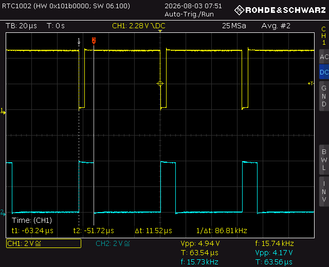
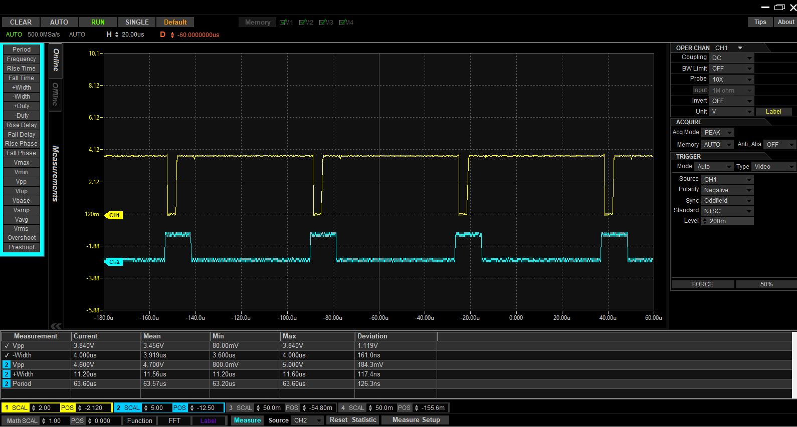
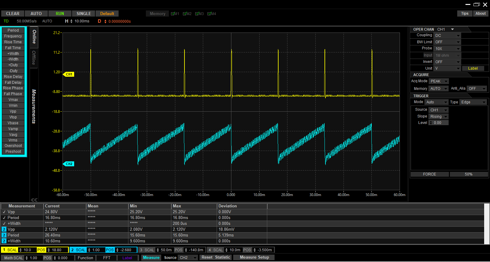

Designed the analog stages
Developed the signal-conditioning, timing, sweep and brightness-control circuitry needed for the complete signal path.
Designed and tested an analog circuit that takes a standard video signal and generates the timing and brightness controls needed to recreate the picture on an oscilloscope.

A television signal carries both the picture and the timing needed to draw it. The challenge was to separate those pieces and convert them into signals an oscilloscope could use.
The result was a multi-stage analog design that handled horizontal position, vertical position and image brightness as separate functions.
I worked across the full design cycle rather than only one stage of the project.
Developed the signal-conditioning, timing, sweep and brightness-control circuitry needed for the complete signal path.
Used LTspice to check signal behavior and timing before moving the design into the lab.
Used an oscilloscope to inspect intermediate waveforms and verify that each section behaved as intended.
Tested smaller sections independently so timing or signal-quality problems could be isolated instead of troubleshooting the whole system at once.
The complete circuit used ±12 V analog rails and locally regulated ±5 V rails. I worked with 7805/7905 regulation, common grounding and local decoupling so fast-switching timing stages did not disturb the wideband analog-video path.
The circuit was also checked on the bench using controlled signals and real video input.



What this demonstrates: I can move from simulation to real hardware, establish the required power rails, measure intermediate signals and debug a mixed-signal system methodically.
NTSC composite video · ±12 V and regulated ±5 V rails · 7805/7905 regulation · decoupling and grounding · sync separation · sweep generation · luminance processing